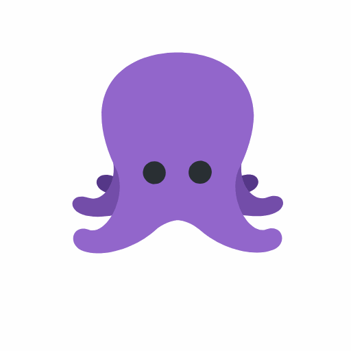
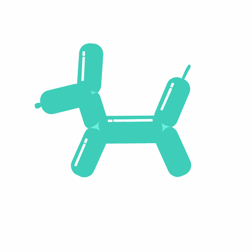
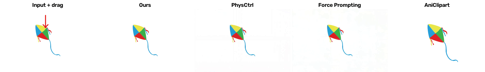
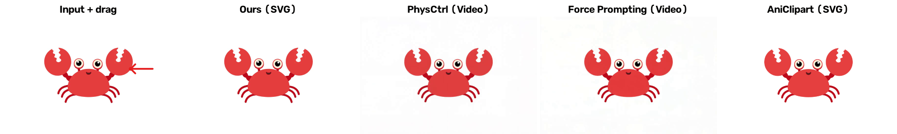
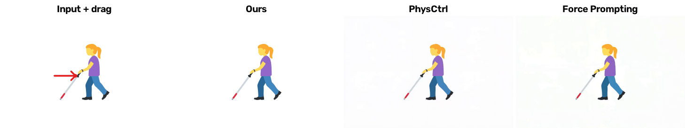
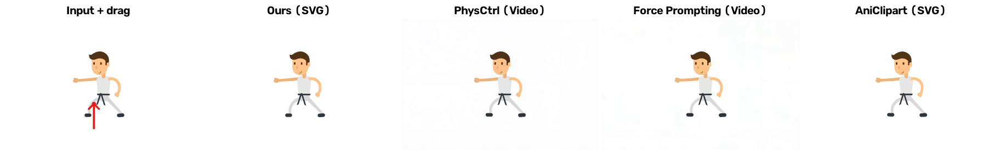
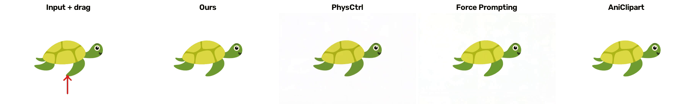
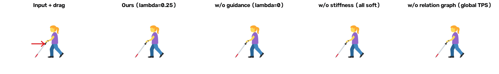
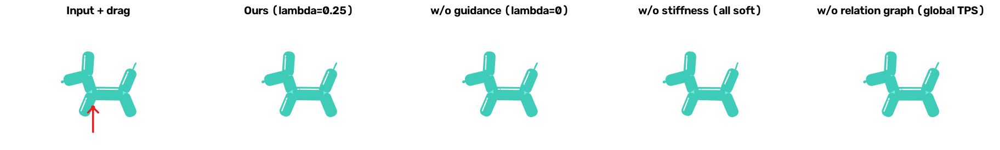

DragPhysSVG:
Structured Particle Dynamics
for SVG Animation
01 / ANIMATION RESULTS
Animation Results
Animations under gravity using a sand material model.


02 / COMPARISONS
Comparison with other methods
We compare against two physical-video generation methods, PhysCtrl and Force Prompting, as well as AniClipart.







Swipe across each figure to view all methods.
03 / ABLATION STUDY
Ablation Study
We compare our full method (λ = 0.25) with variants without guidance (λ = 0), without stiffness (all soft), and without the relation graph (global TPS).


Swipe across each figure to view all variants.
04 / GUIDANCE STRENGTH
Effect of the guidance strength
A comparison of guidance at strengths of 0 (vanilla), 0.25×, 0.5×, and 1×, with drags from the top, bottom, left, and right.

Swipe across the figure to view all guidance strengths.